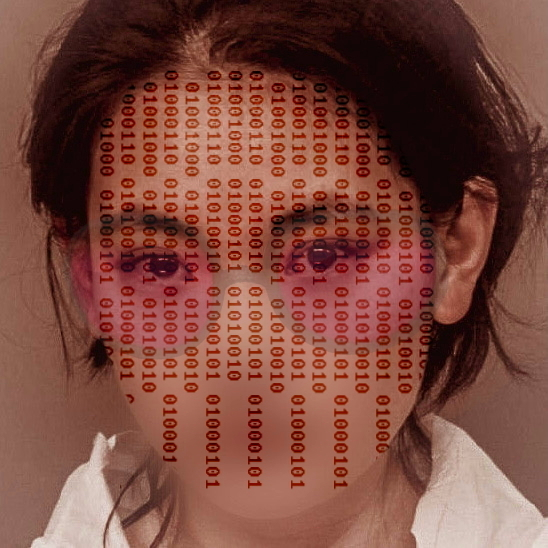

Remilia House ريميليا هاوس

The Complete Mausoleum of Miya Black Hearted Cyber Angel Baby
الضريح الكامل لمييا بلاك هارت إنجل بيبي
The Exegesis of Miya Black Hearted Cyber Angel Baby
تفسير ميا بلاك القلب القلب السيبراني الطفل الملاك
Black Heart, White Light: The Gospel of Miya, and Collected Commentaries
القلب الأسود ، الضوء الأبيض: إنجيل ميا ، والتعليقات المجمعة
*
Recorded Eulogies